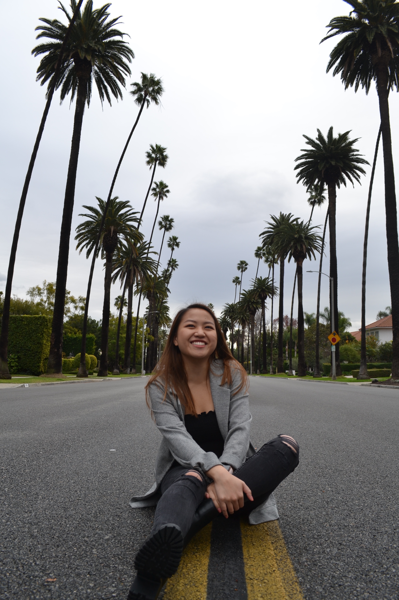

Hi, I'm Katie.
Aside from product design, wireframes, and sticky notes, I'm also interested in:
- Music ↬ I love to sing covers of my favorite songs and mix it myself, arrange songs for my
a cappella group on campus, and create endless Spotify playlists
- Hiking ↬ Never really an outdoors person, I've grown to love hiking along the waterfalls and
state parks around Cornell
- Cooking shows ↬ After getting hooked Chopped and The Final Table, I've slowly transitioned into
baking shows too
- Creative writing ↬ I've always enjoyed writing short stories and poetry as an outlet for myself
to record my current feelings and environments
Feel free to reach out to me through LinkedIn. You can also email me at kms432@cornell.edu.